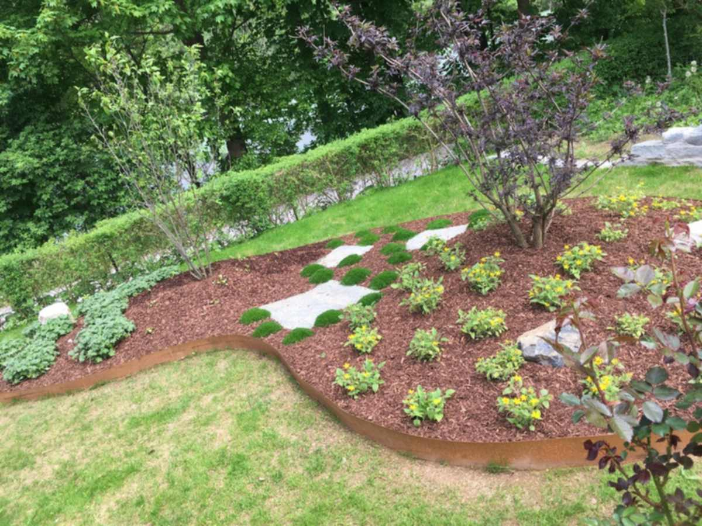
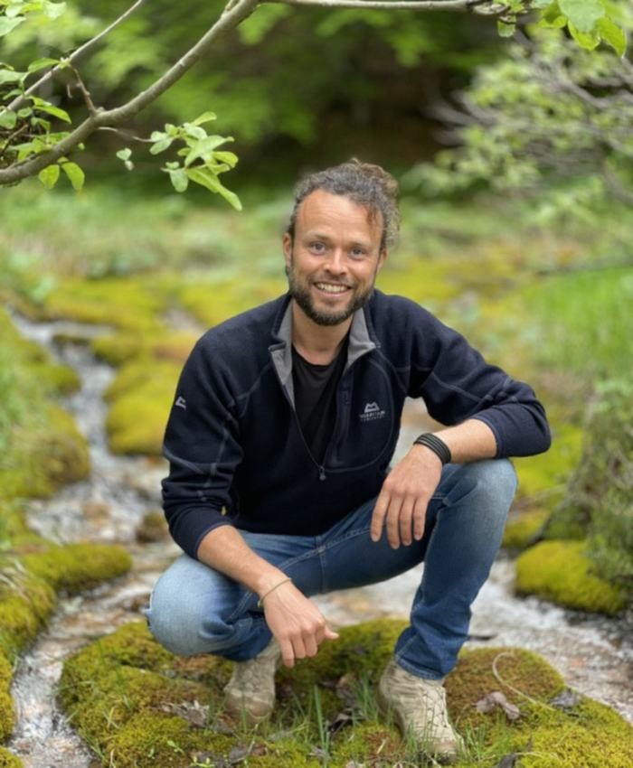
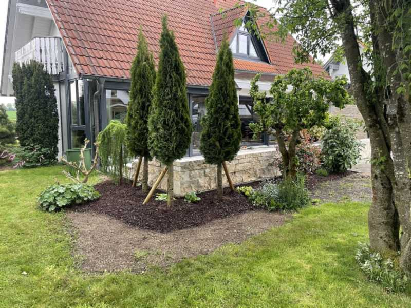
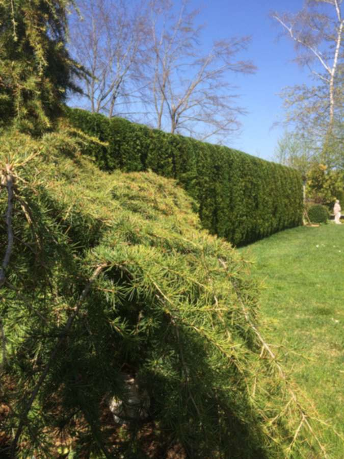
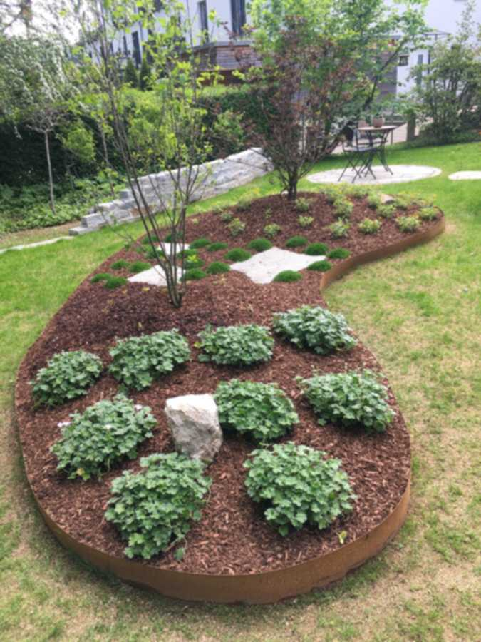
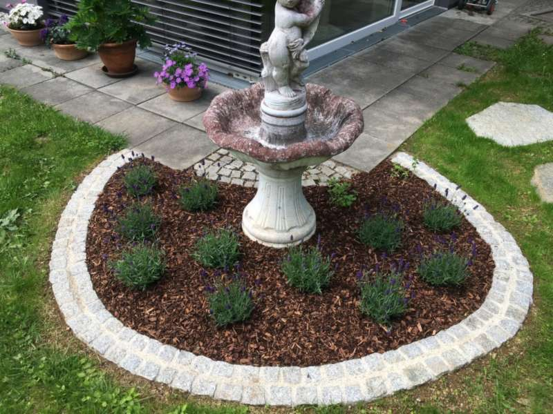
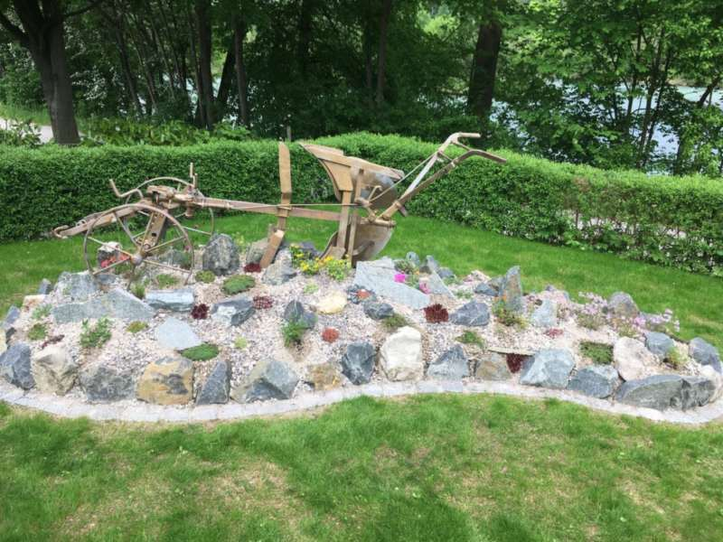
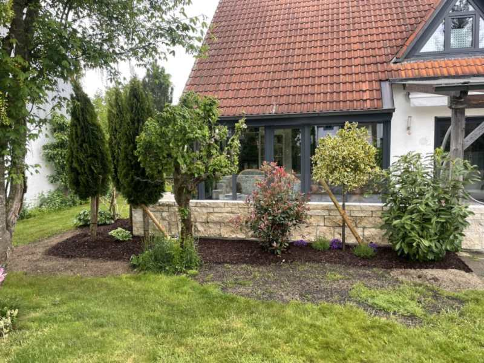
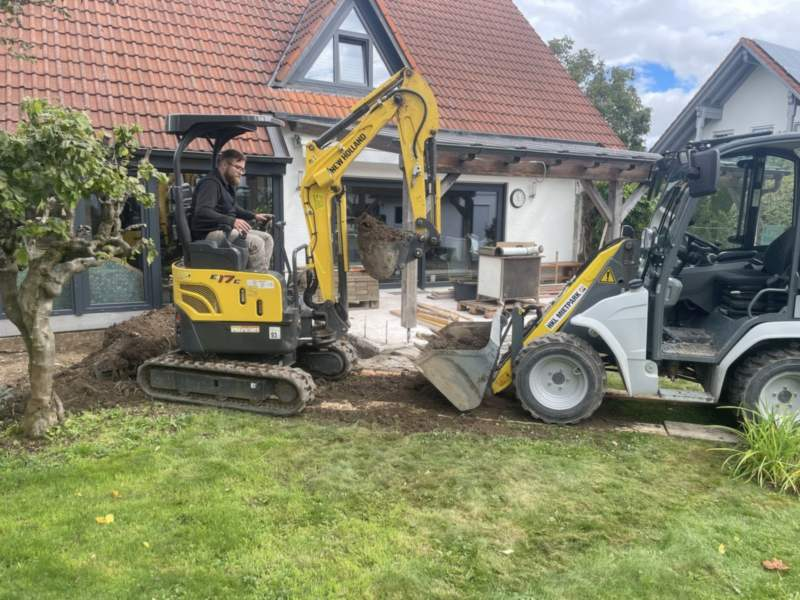
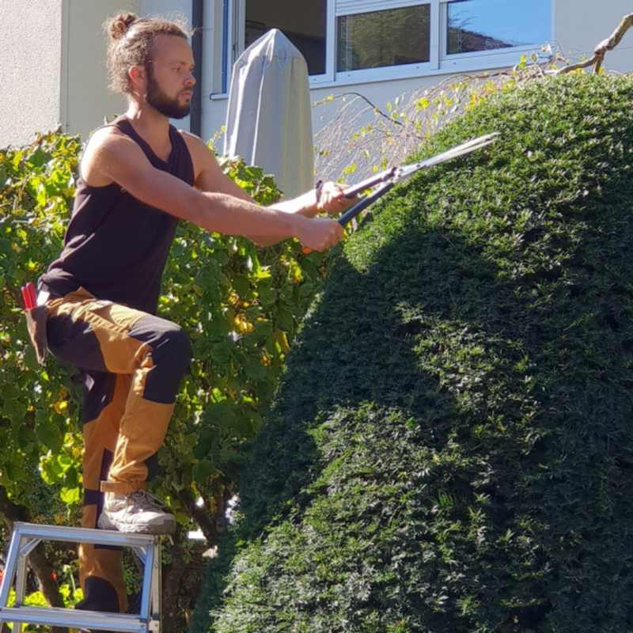

Gärten gestalten und pflegen in Landsberg am Lech.
Von der Neuanlage bis zur laufenden Pflege — natürlich, durchdacht und persönlich von Karsten Scheffler. Damit Ihr Garten nicht nur gut aussieht, sondern sich auch gut anfühlt.
08191 4016820
Hallo, ich bin Karsten Scheffler.
Ich plane, gestalte und pflege individuelle Gärten und Außenanlagen im Raum Landsberg am Lech — zuverlässig, persönlich und mit Blick fürs Detail. Mit Erfahrung und einem guten Gespür für die Natur sorge ich dafür, dass aus Ihren Wünschen ein Garten wird, der dauerhaft Freude macht.
„Ich gestalte Gärten, die nicht nur gut aussehen, sondern sich auch gut anfühlen — natürlich, funktional und individuell auf Sie abgestimmt."
Jeder Garten beginnt mit einem Gespräch. Ich höre zu, schaue mir die Gegebenheiten vor Ort an und entwickle daraus eine Lösung, die zu Ihnen und Ihrem Grundstück passt.
Gartengestaltung Scheffler · „Natur mit Struktur"
Ein Garten, der Form hat — und sie behält.
Ob kleine Veränderung oder komplette Neugestaltung, einmalige Anlage oder regelmäßige Pflege: Sie bekommen alles aus einer Hand, fachgerecht und zum richtigen Zeitpunkt.
Gartengestaltung & Neuanlage
Von der Idee bis zum fertigen Garten: Beetkonzepte, Pflanzpläne, Natursteinmauern, Wege und Terrassenbepflanzung — durchdacht angelegt, damit es nicht nur jetzt, sondern in Jahren noch stimmt.
Regelmäßige Gartenpflege
Damit Ihre grüne Oase gepflegt bleibt, ohne dass Sie sich kümmern müssen: Rasen, Beete, Pflanzen — verlässlich betreut über die Saison, ganz nach Absprache.
Hecken-, Form- & Gehölzschnitt
Mein Schwerpunkt: exakter Schnitt von Hecken und Ziergehölzen für gesundes Wachstum und eine schöne Form — fachgerecht und zur richtigen Jahreszeit ausgeführt.
Obstbaumschnitt
Sommer- wie Winterschnitt: Mit präziser Schnitttechnik fördere ich die Blütenbildung, halte Ihre Obstbäume gesund und sorge für gute Erträge.
Outdoor-Bonsai-Pflege
Eine Spezialität: Beschnitt und Pflege Ihres Outdoor-Bonsai mit dem nötigen Fingerspitzengefühl — damit Form und Vitalität über Jahre erhalten bleiben.
Erd- & Pflasterarbeiten
Vom Hangbeet bis zur Geländemodellierung: Erdarbeiten mit Minibagger und Radlader — die solide Grundlage für jeden Garten, der Bestand haben soll.
Ein Blick in echte Gärten.
Eine kleine Auswahl aus Landsberg und Umgebung — Beete, Natursteinmauern, Formschnitt und Neuanlagen. Alles selbst geplant und umgesetzt.








Lust auf so einen Garten? Lassen Sie uns reden →
In drei Schritten zu Ihrem Garten.
Gespräch vor Ort
Sie melden sich, wir schauen uns Ihren Garten gemeinsam an. Ich höre zu — was wünschen Sie sich, was passt zum Grundstück? Unverbindlich und kostenlos.
Vorschlag & fairer Rahmen
Sie bekommen einen konkreten Vorschlag und einen klaren Kostenrahmen — transparent, ohne versteckte Posten. Sie entscheiden in Ruhe.
Umsetzung & Pflege
Ich setze um — sauber und termintreu. Auf Wunsch bleibe ich danach für die regelmäßige Pflege an Ihrer Seite. Ein Ansprechpartner für alles.
Zuhause in Landsberg am Lech.
Ich arbeite für Privatgärten in Landsberg am Lech und im gesamten Landkreis. Wenn Ihr Ort hier nicht dabei ist: fragen Sie einfach, meist passt es trotzdem.
Jeder Garten beginnt mit einem Gespräch.
Haben Sie Fragen, Wünsche oder Anregungen? Nehmen Sie einfach Kontakt mit mir auf — ich melde mich zeitnah persönlich bei Ihnen.
08191 4016820 · 0176 45624587
Landsberg am Lech & Umgebung
🌿 Ich melde mich innerhalb von 24 Stunden persönlich bei Ihnen zurück — kein Callcenter, kein Subunternehmer.
Vorschau-Hinweis: Dies ist eine Design-Vorschau. Im echten Betrieb landet Ihre Nachricht direkt im Postfach von Karsten Scheffler — hier wird zum Ausprobieren noch nichts versendet.